10.1 Role of Geology in Civil Engineering Projects
Civil engineering structures—such as massive dams, highway tunnels, deep bridge caissons, and high-rise foundations—are founded directly upon or driven through rock masses and soils. The safety, cost, longevity, and structural integrity of these works depend entirely upon the geological conditions of the site. A thorough geological investigation proceeds in three distinct stages:

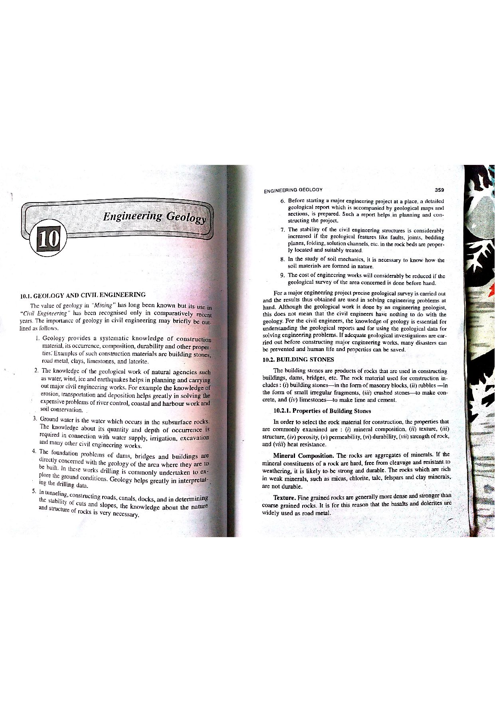
- Preliminary Reconnaissance: Studying regional geological maps, aerial photographs, satellite imagery, and surface exposures to establish broad lithological boundaries and structural trends.
- Surface Exploration: Detailed 1:1,000 or 1:500 geological mapping of the project footprint, recording dip, strike, joint patterns, shear zones, weathered profiles, and river gravel depths.
- Subsurface Investigation: Core drilling, geophysical logging, water pressure tests (Lugeon tests), and test pits. Rock core quality is quantified using Rock Quality Designation (RQD) (Deere, 1964): $$\text{RQD} = \frac{\sum \text{Length of Sound Core Pieces } \ge 10\text{ cm}}{\text{Total Length of Core Run}} \times 100\%$$
| RQD Range (%) | Rock Mass Quality Classification | Engineering Implications |
|---|---|---|
| $90\text{--}100\%$ | Excellent | Massive, unweathered rock; requires minimal support; ideal dam foundation. |
| $75\text{--}90\%$ | Good | Minor jointing; suitable for gravity dams with routine consolidation grouting. |
| $50\text{--}75\%$ | Fair | Moderately jointed; requires rock bolts, shotcrete, and drainage relief. |
| $25\text{--}50\%$ | Poor | Heavily fractured; high permeability; requires heavy steel rib sets or curtain grouting. |
| $<25\%$ | Very Poor | Crushed fault gouge / weathered rock; prone to swelling, squeezing, and cave-ins. |
10.2 Geological Investigations for Dams and Reservoirs
A Dam is an impervious barrier constructed across a river valley to impound water for irrigation, hydroelectric generation, or flood control. The resulting body of impounded water is the Reservoir.

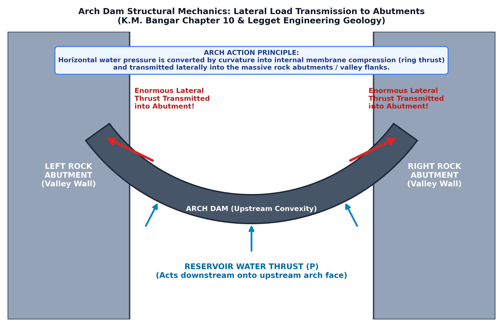


Types of Dams
- Gravity Dam: Massive concrete or stone masonry structure designed to resist hydrostatic overturning and sliding forces purely by its own dead weight (e.g., Bhakra Dam, Sardar Sarovar Dam). Requires hard, unyielding crystalline foundation rock ($UCS > 60\text{ MPa}$).
- Arch Dam: Upstream-curved concrete structure that transfers the major hydrostatic water thrust to the rocky valley abutments by arch action (e.g., Idukki Dam, Kerala). Requires exceptionally sound, rigid canyon walls with zero joint deformation.
- Buttress Dam: Sloping upstream deck supported at regular intervals by downstream triangular concrete buttress walls.
- Earth / Rockfill Dam: Embankment of compacted earth, gravel, and rip-rap with an impervious clay core. Adaptable to wider valleys with weak or compressible alluvial foundations (e.g., Tehri Dam, Hirakud Dam).
Effect of Dip and Strike on Dam Foundation Stability
The orientation of rock bedding planes relative to the dam axis and river flow is the single most critical structural factor:
- Beds Dipping Upstream (Most Favorable Condition): The resultant force ($R$) of the dam's weight ($W$) and reservoir water pressure ($P$) acts nearly perpendicular to the bedding planes. This prevents downstream sliding, forces bedding joints closed under compression, and significantly lengthens the seepage percolation path under the heel.
- Beds Dipping Downstream (Most Unfavorable / Hazardous Condition): The resultant force acts nearly parallel to the bedding planes. Seepage water under hydrostatic pressure penetrates the bedding planes, lubricating them and developing upward uplift pressure ($U$), which drastically reduces shear resistance and can trigger catastrophic downstream sliding failure of the dam.
- Horizontal Beds: Structurally stable against sliding, but horizontal bedding planes can act as continuous leakage channels if weak shale or clay beds are sandwiched between hard sandstones.
- Vertical Beds Striking Across the River: Generally sound, provided competent beds (e.g., quartzite) form the foundation across the entire dam width. If vertical beds strike parallel to the river flow, differential erosion creates deep longitudinal gorges and dangerous uneven settlement.
Geological Problems of Reservoirs
- Water Tightness & Leakage: Subsurface leakage occurs through porous sandstones, fractured fault zones, cavernous karst limestones, and buried paleo-channels. Karst limestone can drain an entire reservoir through subsurface sinkholes.
- Siltation / Silting: Inflow of suspended sediment deposited in the quiet reservoir water progressively reduces active live storage capacity. Governed by catchment vegetation and soil erosion rates.
- Reservoir-Induced Seismicity (RIS): Impoundment of vast water masses exerts tremendous dead load and increases pore water pressure along pre-existing deep faults, triggering seismic earthquakes (e.g., the M 6.3 Koyna Earthquake of December 11, 1967 in Maharashtra, India).
10.3 Geological Investigations for Tunnels
A Tunnel is an underground passageway driven through rock or soil without disturbing the overlying ground surface. The highest point of the tunnel cross-section is the Crown (roof), the sides are the Haunches / Walls, and the floor is the Invert.


Structural Controls on Tunnel Alignment
- Tunneling Along the Strike of Tilted Beds: Highly dangerous. Asymmetrical rock pressure develops because the strata on one side of the tunnel dip into the opening while those on the opposite side dip away. This leads to continuous rock falls, roof sagging, and heavy side thrust.
- Tunneling Across the Strike of Tilted Beds: The most favorable alignment. Each individual bed forms a natural self-supporting arch across the roof, and the tunnel quickly passes through different strata into sound rock.
- Tunneling in Folded Strata:
- In a Synclinal Core (Highly Treacherous): The syncline acts as a natural subsurface basin, concentrating enormous volumes of pressurized groundwater. Driving a tunnel through the trough causes sudden bursting water inrushes and high hydrostatic head on the lining.
- In an Anticlinal Core (Favorable for Drainage): Groundwater naturally drains away from the anticlinal axis down the limbs. However, rocks at the crest are under intense tensional stress and develop radial joints; block dropouts and roof rockfalls are common unless stabilized with rock bolts and shotcrete.
- Fault Zones in Tunnels: Fault planes contain pulverized fault gouge (clayey rock flour) and loose fault breccia. When intersected by a tunnel, saturated gouge turns into "running ground" that surges into the excavation, creating giant overbreak cavities and daylight cave-ins.
10.4 Landslides and Mass Wasting
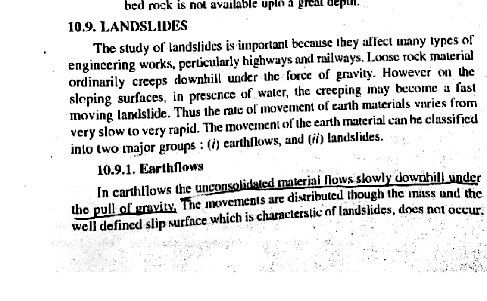
A Landslide is the rapid or gradual downward and outward movement of a mass of rock, earth, or debris down a slope under the direct influence of gravity along an identifiable shear failure surface:

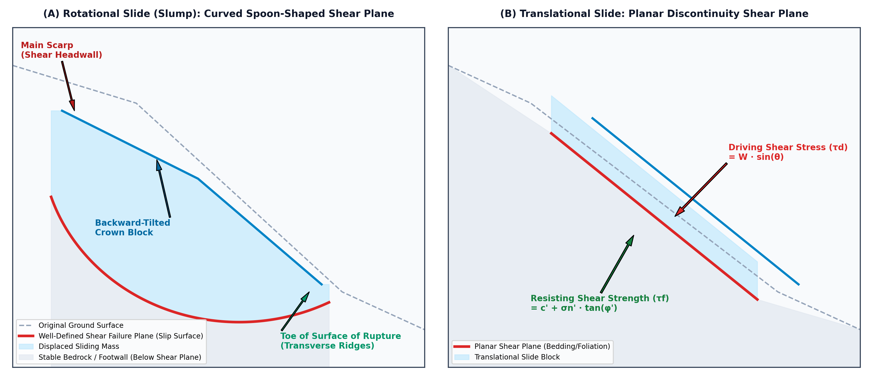
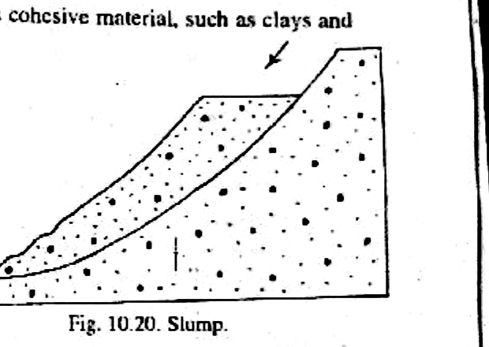

Mechanics and Factor of Safety ($FS$)
Slope stability is governed by the ratio of shear strength ($\tau_f$) resisting failure to the shear stress ($\tau$) driving failure along the prospective slip surface (Mohr-Coulomb criterion):
$$FS = \frac{\text{Resisting Shear Strength}}{\text{Driving Shear Stress}} = \frac{c' + (\sigma_n - u) \tan \phi'}{\tau}$$Where:
- $c'$ = Effective cohesion of the rock/soil mass ($\text{kPa}$).
- $\sigma_n$ = Total normal stress perpendicular to the slip plane ($\text{kPa}$).
- $u$ = Pore water pressure within the slip plane ($\text{kPa}$).
- $\phi'$ = Effective internal angle of friction ($^\circ$).
- $\tau$ = Tangential driving component of gravity along the slip plane ($\text{kPa}$).
When $FS > 1.5$, the slope is stable. When $FS \le 1.0$, catastrophic slope failure occurs. Notice that rising pore water pressure ($u$) directly subtracts from the normal stress, reducing the frictional shear resistance $(\sigma_n - u)\tan \phi'$ to near zero during heavy monsoon rains!
10.5 Mechanical Properties & Testing of Building Stones
Rock used as building stone, concrete aggregate, ballast, or foundation bedrock must withstand crushing, tensile, and weathering stresses. Key laboratory and field testing methods include:


1. Unconfined Compressive Strength ($UCS$)

Where $P$ is the failure peak load ($\text{N}$) and $A$ is the cross-sectional area ($\text{mm}^2$). High-strength granites, basalts, and quartzites exhibit $\sigma_c = 150\text{--}250\text{ MPa}$, whereas weak shales and porous sandstones fail at $<30\text{ MPa}$.
2. Brazilian Indirect Tensile Strength ($\sigma_t$)

Where $P$ is the applied failure load, $D$ is the disc diameter, and $t$ is the disc thickness. Intact rocks are exceptionally weak in tension; tensile strength is typically only $\frac{1}{10}\text{ to }\frac{1}{20}$ of compressive strength ($\sigma_t \approx 0.05\text{--}0.10 \times \sigma_c$).
3. Schmidt Rebound Hammer Test

10.6 Visual Atlas: Geotechnical Testing, Ground Improvement & Slope Engineering
Comprehensive rock mechanics and civil engineering diagrams covering bending strength, porosity-void ratio relations, pozzolans, deep mixing, and aggregate standards.

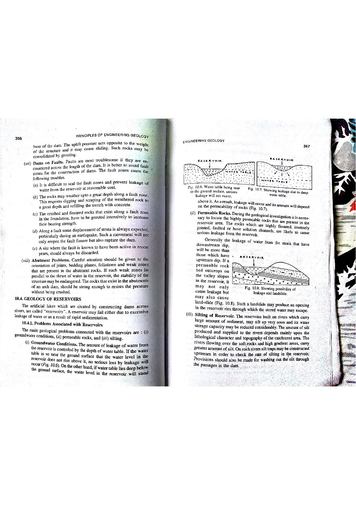
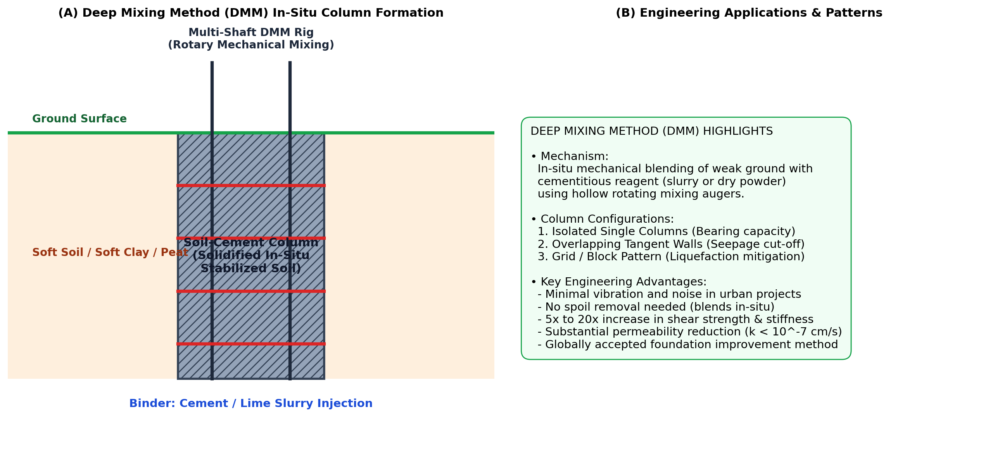
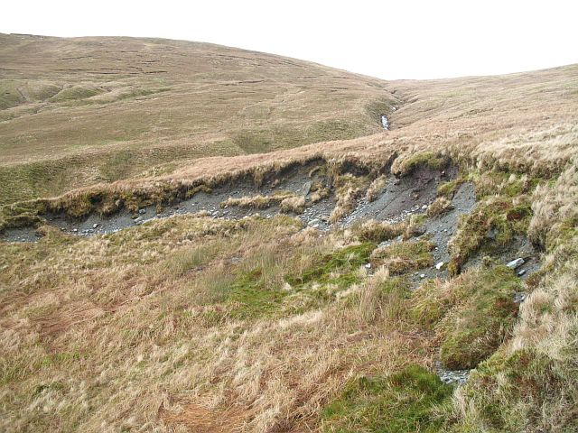
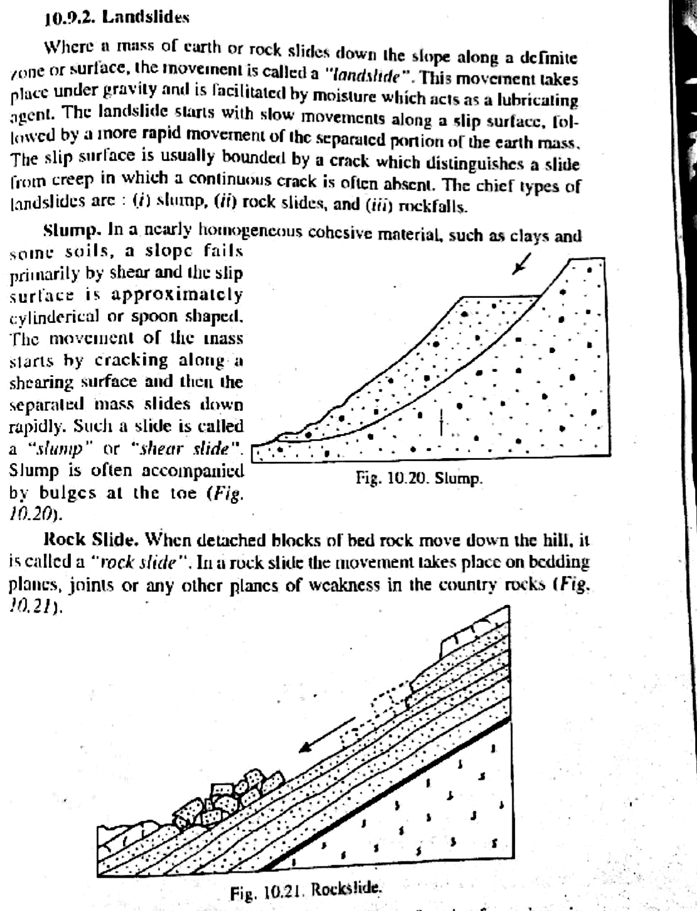
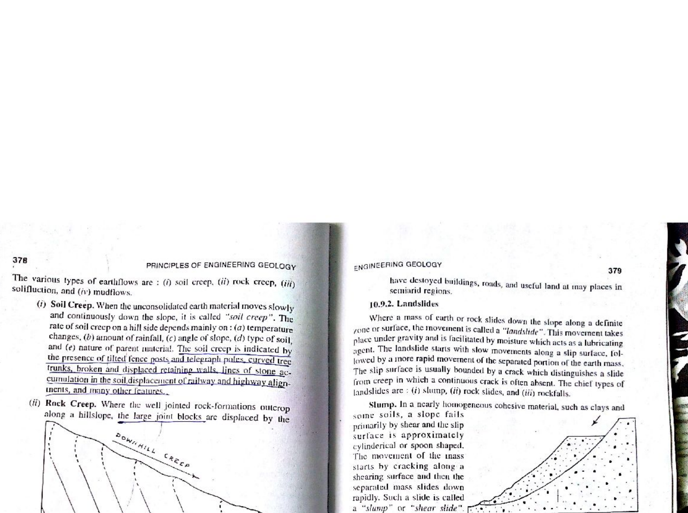
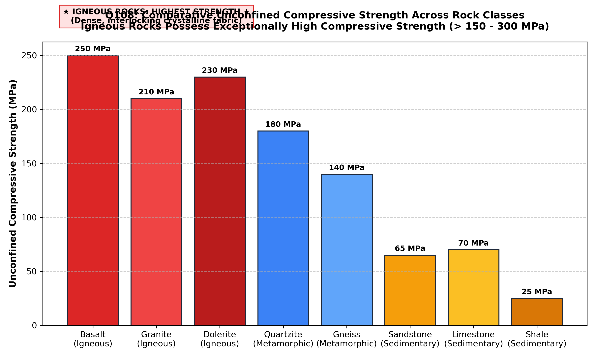


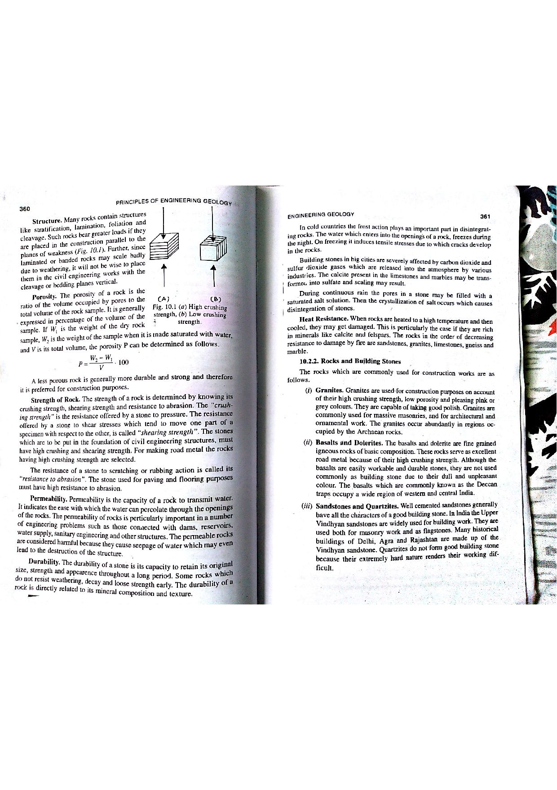


- Granite & Charnockite: Unmatched compressive strength ($180\text{--}220\text{ MPa}$), low porosity ($<0.5\%$), zero water absorption. Superb foundation rock and monumental dimension stone.
- Basalt (Deccan Trap): High crushing strength ($150\text{--}200\text{ MPa}$), high abrasion resistance. Prime coarse aggregate for concrete and railway ballast.
- Sandstone (Vindhyan): Uniform grain size, easily dressed along bedding planes, durable silica cement. Premier architectural building stone across North India.
- Marble: Aesthetic crystalline metamorphic rock; easily polished for indoor flooring and cladding, but susceptible to acidic atmospheric weathering ($\text{H}_2\text{SO}_4$ acid rain).
- Slate: Readily splits along planar slaty cleavage into thin, impervious, flat plates used for roof tiling and electrical switchboards.